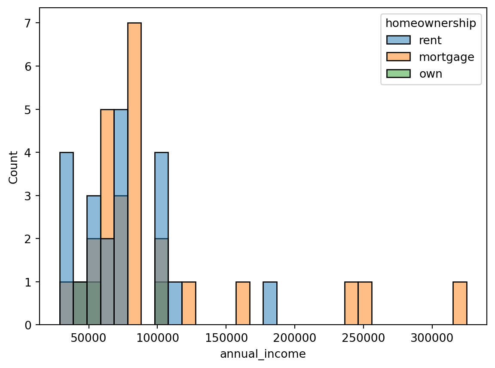
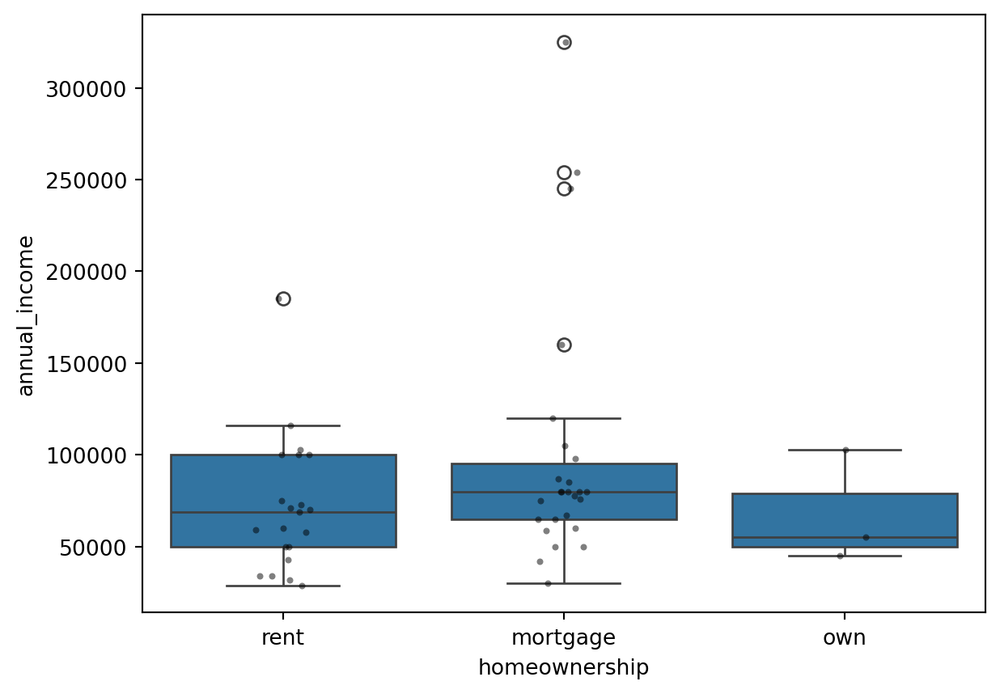
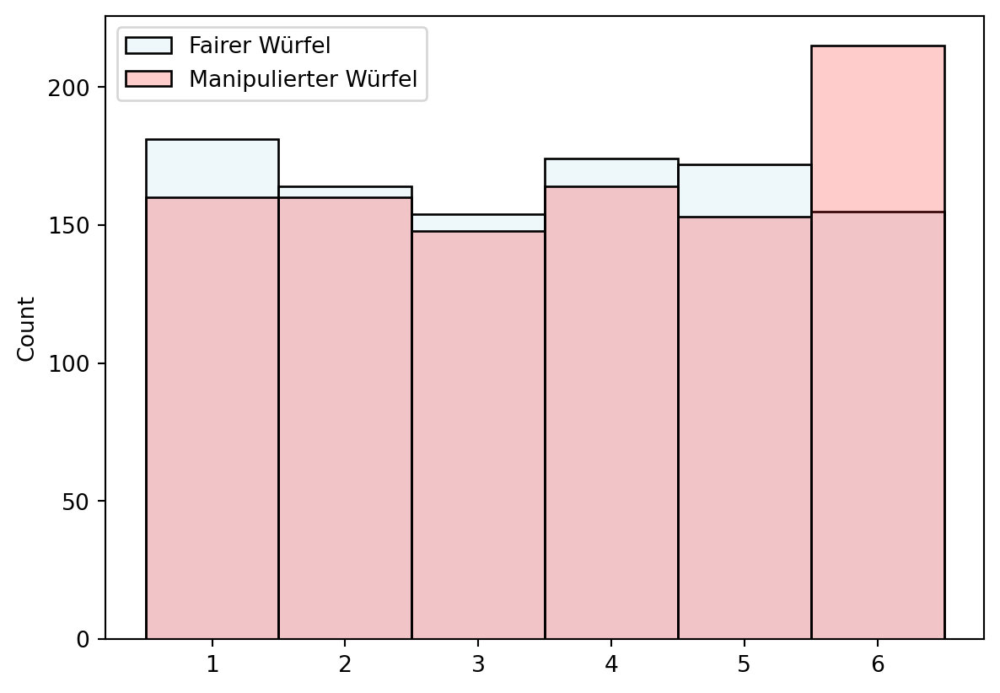
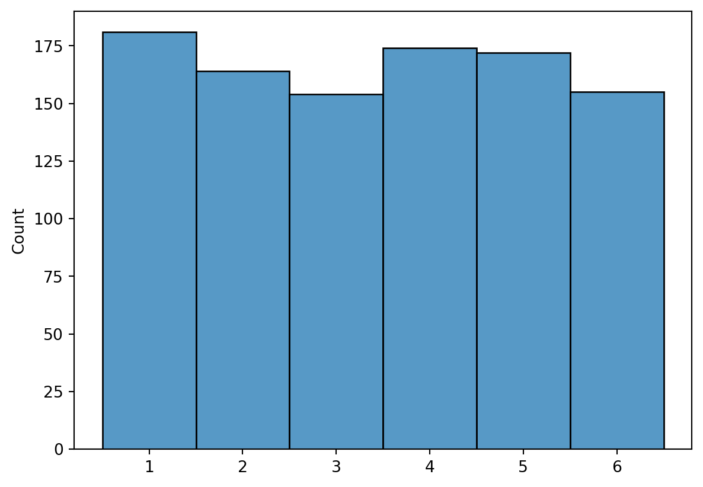
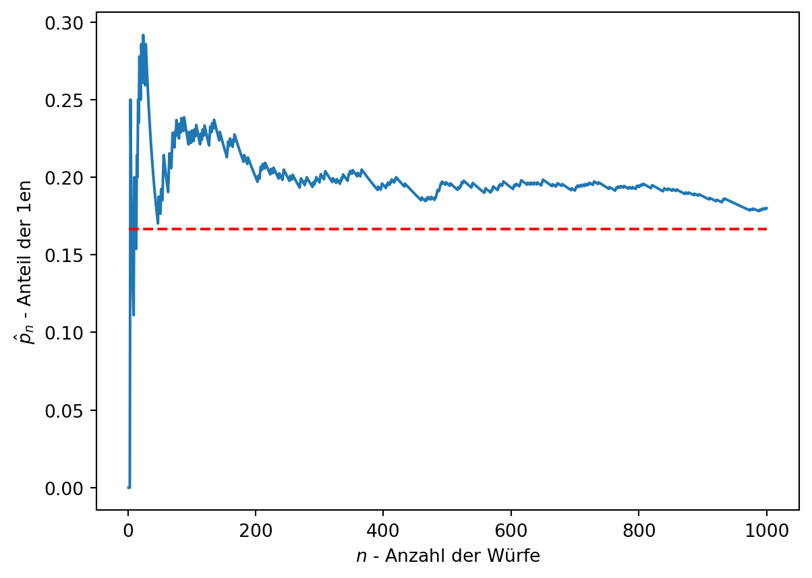
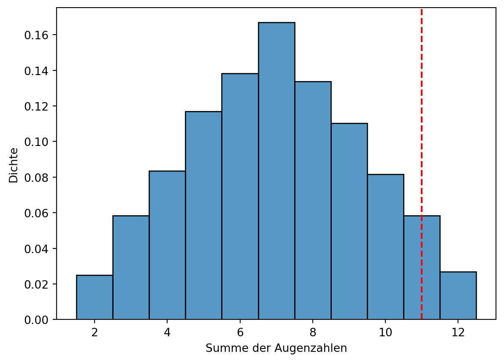

3 Stichproben und Zufallsvariablen
In diesem Abschnitt {#sec-statistics-sampling} behandeln wir Stichproben und Zufallsvariablen.
Eine Stichprobe umfasst \(n\) Beobachtungen aus einer Grundgesamtheit, der Menge \(N\) aller möglichen Beobachtungen. Sie ist eine Teilmenge der Grundgesamtheit und sollte idealerweise Rückschlüsse auf diese ermöglichen.
3.1 Stichprobenziehung aus einer Grundgesamtheit
Die Grundgesamtheit (population) ist die Gesamtheit aller untersuchbaren Beobachtungen, die Stichprobe (sample) eine Teilmenge davon. Eine repräsentative Stichprobe erlaubt Verallgemeinerungen. Da die vollständige Datenerhebung der Grundgesamtheit oft zu aufwendig und kostspielig ist, ziehen wir Rückschlüsse aus Stichproben (siehe Figure Figure 3.1). Dies gelingt am besten mit einer großen, zufällig ausgewählten Stichprobe.
Allerdings kommt es hier zu einen Unterschied zwischen der Sichtweise der klassischen Statistik und dem Ansatz den den viele Data Scientists verfolgen. In der klassischen Statistik wird die Stichprobe so gewählt, dass sie repräsentativ für die Grundgesamtheit ist.
Note
Wenn wir die Leistungsfähigkeit in Mathematik unter Studierenden auswerten wollen, dann sollten wir unsere Stichprobe nicht nur im Studiengang Mechatronik nachfragen.
Als Data Scientist hingegen, sind wir oft an den Daten interessiert, die uns zur Verfügung stehen. Wir haben keine Möglichkeit, die Grundgesamtheit zu beeinflussen. Wir müssen also mit den Daten arbeiten, die wir haben und uns dabei bewusst sein, dass wir einem Sampling-Bias unterliegen.
Note
Wenn wir die die Lebensdauer eines Werkzeugs auf einer 5-Achs-Fräsmaschinene prognostizieren wollen, können wir die Modelle nicht zwischen Betrieben vergleichen, die die Maschine regelmäßig warten und solchen, die das nicht tun.
3.2 Unterschied zwischen klassischer Statistik und Data Science
Die klassische Statistik wählt Stichproben so, dass sie die Grundgesamtheit repräsentieren, während Data Scientists oft mit verfügbaren Daten arbeiten und keinen Einfluss auf die Grundgesamtheit haben. Dies führt zu einem möglichen Sampling-Bias.
Note
Zur Bewertung der Mathematikleistung von Studierenden wäre eine Stichprobe nur aus Mechatronik nicht repräsentativ.
Note
Bei der Prognose der Werkzeuglebensdauer einer 5-Achs-Fräsmaschine sind Vergleiche zwischen gewarteten und ungewarteten Maschinen verzerrt.
3.3 Gruppieren von Daten
Ein bewusster Bias kann bei der Datenauswahl entstehen. Fragen wir z. B. nur Personen mit Hypothek (mortgage) nach ihrem Einkommen und nicht Mieter (rent), ist die Stichprobe nicht repräsentativ (siehe Figure Figure 3.2).
import pandas as pd
import seaborn as sns
df = pd.read_csv("../_assets/dataexploratory/loan50.csv")
sns.histplot(data=df, x="annual_income", bins=30, hue="homeownership")

df.groupby("homeownership")["annual_income"].mean()homeownership
mortgage 99807.692308
own 67666.666667
rent 71928.571429
Name: annual_income, dtype: float643.4 Analyse der Daten
Note
Inwiefern entsprechen die Daten den Erwartungen?
Im Beispiel haben wir eine ordinal skalierte Variable (homeownership) und eine metrisch skalierte Variable (annual_income). Wir untersuchen ihren Zusammenhang. Korrelation und Kausalität, wie in der letzten Einheit besprochen, sind hier nicht anwendbar, da homeownership ordinal ist.
3.4.1 Boxplot
Ein Boxplot eignet sich zum Vergleich ordinaler und metrischer Variablen. Er zeigt die Verteilung der metrischen Variable (annual_income) für die Ausprägungen der ordinalen Variable (homeownership). Die Box umfasst Median sowie erstes und drittes Quartil, die Whisker die Datenreichweite (1,5-fache Interquartilsdistanz ab den Quartilen), und Punkte markieren Ausreißer (siehe Figure Figure 3.3).
import pandas as pd
import seaborn as sns
df = pd.read_csv("../_assets/dataexploratory/loan50.csv")
sns.boxplot(data=df, x="homeownership", y="annual_income")
sns.stripplot(data=df, x="homeownership", y="annual_income", color="black", size=3, alpha=0.5)

Der Boxplot ist einfach zu erstellen und zu interpretieren, jedoch bei stark unterschiedlichen Verteilungen wenig aussagekräftig. Hier können Daten transformationen oder alternative Visualisierungen helfen.
Tip
Eine moderne Alternative zum Boxplot ist der Violinplot. Er zeigt die Verteilung als geschätzte Wahrscheinlichkeitsdichte (bisher für uns ein geglättetes Histogramm) und ist informativer, da er die Datenverteilung detaillierter darstellt (siehe Figure ?fig-violin-plot). 
3.4.2 Experimente
In der Statistik unterscheiden wir Beobachtungsstudien, bei denen Daten ohne Eingriff beobachtet werden, von Experimenten, bei denen Daten manipuliert werden, um Effekte zu prüfen. Experimente sind aufwendiger und teurer, ermöglichen aber die Untersuchung von Kausalzusammenhängen.
Note
Beobachtungsstudien können longitudinal sein, z. B. die Mathematikleistung von Studierenden über die Zeit, oder Querschnittsstudien, z. B. die Leistung nach Studiengängen zu einem Zeitpunkt.
Note
Um die Wirkung von Studiengängen auf die Mathematikleistung zu prüfen, könnten wir ein Experiment durchführen: Studierende zufällig Studiengängen zuweisen und ihre Leistung messen. Dies erfordert Zufallsauswahl und -zuweisung (ethische Bedenken beachten). Eine Kontrollgruppe ohne Studiengang schließt externe Einflüsse (z. B. Alter) aus. Eine Messung vor dem Studium ist bei zufälliger Zuweisung entbehrlich.
Experimente sind der Goldstandard für Kausalität. Eine unabhängige Variable (z. B. Studiengang) wird manipuliert, andere Variablen konstant gehalten oder durch große Stichproben ausgeglichen. Findet sich eine Korrelation zur abhängigen Variable (z. B. Mathematikleistung), ist Kausalität plausibel. Im Data Science wird oft pragmatisch mit vorhandenen Daten gearbeitet – schneller, aber weniger zuverlässig.
3.4.2.1 Beispiel: Ist ein Würfel gezinkt?
Stellen wir uns vor, eine Kollegin besteht auf ihrem eigenen Würfel. Ist er gezinkt? Eine Beobachtungsstudie könnte die Augenzahlen mit einem fairen Würfel (Kontrollgruppe) vergleichen. Wir werfen beide Würfel 1000-mal und prüfen die Verteilung (siehe Figure Figure 3.4). Auffällige Abweichungen machen misstrauisch.
import numpy as np
import seaborn as sns
import matplotlib.pyplot as plt
np.random.seed(42)
fair_dice_rolls = np.random.randint(1, 7, 1000)
manipulated_dice_rolls = np.random.choice([1, 2, 3, 4, 5, 6], 1000, p=[1.9/12, 1.9/12, 1.9/12, 1.9/12, 1.9/12, 2.5/12])
sns.histplot(fair_dice_rolls, bins=6, discrete=True, color="lightblue", alpha=0.2, label="Fairer Würfel")
sns.histplot(manipulated_dice_rolls, bins=6, discrete=True, color="red", alpha=0.2, label="Manipulierter Würfel")
plt.legend()

3.5 Blickpunkte auf Variablen
Wir haben Variablen (Spalten in tidy data) untersucht und betrachten sie aus verschiedenen Perspektiven.
3.5.1 Skalenniveaus
Skalenniveaus klassifizieren Variablen in nominal, ordinal, metrisch und verhältnisskaliert. Sie bestimmen, welche statistischen Methoden zur Analyse geeignet sind.
3.5.2 Im Kontext von Experimenten
In Experimenten und Beobachtungsstudien unterscheiden wir unabhängige (Einflussgröße) und abhängige (gemessene Effekte) Variablen. Bezeichnungen variieren je nach Fachgebiet (siehe Table (tab-variable-terms?)). Später erkennen wir, dass mehrere unabhängige und abhängige Variablen möglich sind, doch zunächst bleiben wir bei Singular.
| Anwendungsfeld | Unabhängige Variable | Abhängige Variable |
|---|---|---|
| Statistik | Explanatory Variable | Response Variable |
| Machine Learning | Features | Target |
| Experimente | Treatment | Outcome |
| Psychologie | Independent Variable | Dependent Variable |
| Forecasts | Predictor | Predicted Variable |
| Ökonometrie | Explanatory Variable | Dependent Variable |
| Informatik | Input | Output |
| Programming | Argument | Return Value |
| Programming | X |
y |
3.6 Wahrscheinlichkeitsrechnung
Eine weitere Perspektive sind Prozesse hinter Beobachtungen: deterministisch (gleiches Ergebnis bei gleichen Bedingungen) oder zufällig (unterschiedliche Ergebnisse trotz gleicher Bedingungen). Zufällige Prozesse werden durch Wahrscheinlichkeiten beschrieben.
Important
Ob das Universum deterministisch oder zufällig ist, spielt keine Rolle. Zufälligkeit bedeutet hier, dass Ergebnisse nicht a priori vorhersagbar sind – sei es durch echte Zufallsprozesse (z. B. Würfeln) oder unvollständige Modellierung (z. B. fehlende Variablen).
3.6.1 Zufallsvariablen
Eine Zufallsvariable nimmt zufällig Werte an – diskret (bestimmte Werte, z. B. Würfelaugenzahl: 1–6) oder kontinuierlich (Werte in einem Intervall, z. B. Temperatur). Die Augenzahl eines Würfels ist eine diskrete Zufallsvariable; jeder Wurf ist eine Realisierung (siehe Figure Figure 3.5).
import numpy as np
import seaborn as sns
np.random.seed(42)
dice_rolls = np.random.randint(1, 7, 1000)
sns.histplot(dice_rolls, bins=6, discrete=True)

3.7 Zufallsvariablen und Münzwurf
Ähnlich wie beim Würfel ist beim Münzwurf die Zufallsvariable die Seite, die oben liegt (Kopf oder Zahl). Für numerische Analysen wandeln wir diese kategorialen Werte in 0 (Zahl) und 1 (Kopf) um, wodurch der Ereignisraum {Kopf, Zahl} zu {0, 1} wird.
3.7.1 Begriffe der Wahrscheinlichkeit
Wir definieren: - Zufallsexperiment/-prozess: Ein Prozess mit unvorhersagbarem Ergebnis, z. B. Münzwurf, Würfeln oder Kartenziehen. - Ereignisraum (sample space): Alle möglichen Ergebnisse eines Zufallsexperiments, z. B. {Kopf, Zahl} beim Münzwurf. - Zufallsvariable: Eine Funktion, die jedem Ergebnis eine Zahl zuordnet, z. B. 1 für Kopf und 0 für Zahl.
3.8 Frequentistische Wahrscheinlichkeit
Important
Die Wahrscheinlichkeit eines Ergebnisses ist der Anteil, wie oft es bei unendlich vielen Wiederholungen eines Zufallsprozesses eintritt. Sie liegt zwischen 0 und 1 und kann als Prozentsatz (0–100 %) angegeben werden.
In Figure Figure 3.5 trat die Augenzahl 2 etwa 167-mal in 1000 Würfen auf, was einer Wahrscheinlichkeit von ca. 1/6 (0,167) entspricht – ebenso für die anderen Augenzahlen. Bei endlichen Beobachtungen ist dies eine Schätzung; die exakte Wahrscheinlichkeit gilt nur für unendlich viele Versuche (siehe Figure Figure 3.6).
import numpy as np
import seaborn as sns
import matplotlib.pyplot as plt
number_of_rolls = 1000
np.random.seed(10)
dice_rolls = np.random.randint(1, 7, number_of_rolls)
proportion_ones = np.cumsum(dice_rolls == 1) / np.arange(1, number_of_rolls + 1)
sns.lineplot(x=np.arange(1, number_of_rolls + 1), y=proportion_ones)
sns.lineplot(x=[1, number_of_rolls + 1], y=[1/6, 1/6], color="red", linestyle="--")
plt.xlabel("$n$ - Anzahl der Würfe")
plt.ylabel("$\hat{p}_n$ - Anteil der 1en")<>:14: SyntaxWarning:
invalid escape sequence '\h'
<>:14: SyntaxWarning:
invalid escape sequence '\h'
/tmp/ipykernel_3311/965827469.py:14: SyntaxWarning:
invalid escape sequence '\h'
Text(0, 0.5, '$\\hat{p}_n$ - Anteil der 1en')

3.8.1 Konvergenz und Schätzungen
Figure Figure 3.6 zeigt den Anteil \(\hat{p}_n\) der Augenzahl 1 bei jedem Schritt \(n\) einer Simulation. Er konvergiert gegen die Wahrscheinlichkeit 1/6 (ca. 0,167). Der beobachtete Anteil \(\hat{p}_n\) schätzt die Wahrscheinlichkeit \(p\) und wird mit mehr Beobachtungen genauer; \(p\) ist der Grenzwert.
Important
In der Statistik arbeiten wir oft mit Schätzungen, da unendlich viele Beobachtungen fehlen. Die Unsicherheit der Schätzungen muss berücksichtigt werden. Schätzungen kennzeichnen wir mit \(\hat{p}\).
Important
Gesetz der großen Zahlen: Mit steigender Beobachtungszahl konvergiert der Anteil eines Ergebnisses gegen dessen Wahrscheinlichkeit.
3.8.2 Wahrscheinlichkeitsnotation
Für verschiedene Ergebnisse schreiben wir \(P(X = x)\) als Wahrscheinlichkeit, dass die Zufallsvariable \(X\) (z. B. Münzwurf) den Wert \(x\) annimmt.
- Für einen fairen Münzwurf:
\(P(X = \text{Kopf}) = 0.5\), \(P(X = \text{Zahl}) = 0.5\)
oder: \(P(X = 1) = 0.5\), \(P(X = 0) = 0.5\).
- Für einen fairen Würfelwurf:
\(P(X = 1) = P(X = 2) = P(X = 3) = P(X = 4) = P(X = 5) = P(X = 6) = 1/6\).
Die Summe der Wahrscheinlichkeiten aller Ergebnisse eines Zufallsexperiments ist stets 1, da mindestens ein Ergebnis eintritt. Dies entspricht der Fläche unter einem normalisierten Histogramm oder einer Dichtefunktion.
3.8.3 Disjunkte Ereignisse
Zwei Ereignisse \(A\) und \(B\) sind disjunkt (sich ausschließend), wenn sie nicht gleichzeitig eintreten können. Beispiel: Bei einem Würfelwurf sind „Augenzahl 1“ und „Augenzahl 2“ disjunkt. Die Wahrscheinlichkeit, dass eines von beiden eintritt, ist \(P(A \cup B)\) (logisches „oder“, „A vereinigt B“):
\[P(X=1 \cup X=2) = P(X=1) + P(X=2) = \frac{1}{6} + \frac{1}{6} = \frac{1}{3}.\]
Important
Additionsregel: Für sich ausschließende Ereignisse \(A\) und \(B\) gilt:
\[P(A \cup B) = P(A) + P(B).\]
Für mehrere disjunkte Ereignisse \(A_1, \ldots, A_n\):
\[P(A_1 \cup A_2 \cup \ldots \cup A_n) = P(A_1) + P(A_2) + \ldots + P(A_n).\]
3.8.3.1 Beispiel: Kreditnehmer-Datensatz
Im Datensatz aus Kapitel 2 beschreibt homeownership, ob ein Kreditnehmer mietet, eine Hypothek hat oder Eigentümer ist. Von 50 Kreditnehmern (siehe Code-Ausgabe) sind die Verteilungen: Miete (21), Hypothek (26), Eigentum (3).
import pandas as pd
df = pd.read_csv("../_assets/dataexploratory/loan50.csv")
print(f"Anzahl Beobachtungen: {df['homeownership'].shape[0]}")
print(df["homeownership"].value_counts())Anzahl Beobachtungen: 50
homeownership
mortgage 26
rent 21
own 3
Name: count, dtype: int64- Sind Miete, Hypothek und Eigentum disjunkt?
- Bestimmen Sie den Anteil der Kredite mit Hypothek und Eigentum separat.
- Nutzen Sie die Additionsregel für disjunkte Ereignisse, um die Wahrscheinlichkeit zu berechnen, dass ein zufällig ausgewählter Kreditnehmer eine Hypothek hat oder Eigentümer ist.
Tip
- Ja, die Kategorien sind disjunkt, da ein Kreditnehmer nur eine davon haben kann.
- Anteil Hypothek: \(\frac{26}{50}\), Anteil Eigentum: \(\frac{3}{50}\).
- Wahrscheinlichkeit (Hypothek oder Eigentum): \(\frac{26}{50} + \frac{3}{50} = \frac{29}{50}\). Dies entspricht der Wahrscheinlichkeit, nicht zu mieten.
3.8.4 Das Komplement eines Ereignisses
Das Komplement eines Ereignisses \(A\), bezeichnet als \(A^c\) oder \(\bar{A}\), ist das Nicht-Eintreten von \(A\). Es umfasst alle Ergebnisse außer \(A\) und ist zu \(A\) disjunkt. Die Wahrscheinlichkeit des Komplements ist:
\[ P(A^c) = 1 - P(A) \]
Beispiel: Die Wahrscheinlichkeit, dass ein Würfel nicht 1 zeigt:
\[ 1 - P(X \neq 1) =1-P(X=1) = 1 - \frac{1}{6} = \frac{5}{6}. \]
Die Summe \(P(A) + P(A^c) = 1\) gilt stets, da entweder \(A\) oder \(A^c\) eintritt.
3.8.5 Nicht-disjunkte Ereignisse
Nicht-disjunkte Ereignisse können überlappen. Beispiel: Bei einem Kartenspiel (siehe Figure Figure 3.7) interessiert die Wahrscheinlichkeit, eine Bildkarte (Bube, Dame, König) oder eine Karo-Karte zu ziehen. Bild und Karo sind nicht disjunkt, da Bildkarten in Karo beide Eigenschaften haben. Einfaches Addieren überschätzt die Wahrscheinlichkeit durch doppelte Zählung.

Ein Venn-Diagramm (siehe Figure Figure 3.8) zeigt: Die Schnittmenge (\(A \cap B\), logisches „und“) sind Karten, die beide Eigenschaften haben; die Vereinigung (\(A \cup B\), logisches „oder“) umfasst alle Karten mit mindestens einer Eigenschaft.

Von 52 Karten sind 12 Bildkarten, 13 Karo-Karten und 3 sowohl Bild- als auch Karo-Karten. Die Wahrscheinlichkeit für „Bild oder Karo“ ist:
\[ P(\text{Bild} \cup \text{Karo}) = P(\text{Bild}) + P(\text{Karo}) - P(\text{Bild} \cap \text{Karo}). = \frac{12}{52} + \frac{13}{52} - \frac{3}{52} = \frac{22}{52}. \]
Hierraus können wir die Additionsregel für nicht-disjunkte Ereignisse formulieren:
Important
Generelle Additionsregel: Für nicht-disjunkte Ereignisse \(A\) und \(B\) gilt:
\[ P(A \cup B) = P(A) + P(B) - P(A \cap B). \]
3.8.5.1 Beispiel: Summe zweier Würfel
Sei \(A\) das Ereignis, dass die Summe der Augenzahlen zweier fairer Würfel kleiner als 12 ist.
- Was ist das Komplement von \(A\)?
- Wie groß ist \(P(A)\)?
Tip
- Das Komplement \(A^c\) ist die Summe \(\geq 12\), also genau 12 (da die maximale Summe 12 beträgt).
- \(P(A)\) ist die Summe der Wahrscheinlichkeiten für Summen 2 bis 11.
Mögliche Summen und Kombinationen (siehe Table (tab-dice-sums?)):
| \(A = W_1 + W_2\) | Mögliche Kombinationen |
|---|---|
| 2 | \((W_1=1 \cap W_2=1)\) |
| 3 | \((W_1=1 \cap W_2=2) \cup (W_1=2 \cap W_2=1)\) |
| 4 | \((W_1=1 \cap W_2=3) \cup (W_1=2 \cap W_2=2) \cup (W_1=3 \cap W_2=1)\) |
| 5 | \((W_1=1 \cap W_2=4) \cup (W_1=2 \cap W_2=3) \cup (W_1=3 \cap W_2=2) \cup (W_1=4 \cap W_2=1)\) |
| 6 | \((W_1=1 \cap W_2=5) \cup (W_1=2 \cap W_2=4) \cup (W_1=3 \cap W_2=3) \cup (W_1=4 \cap W_2=2) \cup (W_1=5 \cap W_2=1)\) |
| 7 | \((W_1=1 \cap W_2=6) \cup (W_1=2 \cap W_2=5) \cup (W_1=3 \cap W_2=4) \cup (W_1=4 \cap W_2=3) \cup (W_1=5 \cap W_2=2) \cup (W_1=6 \cap W_2=1)\) |
| 8 | \((W_1=2 \cap W_2=6) \cup (W_1=3 \cap W_2=5) \cup (W_1=4 \cap W_2=4) \cup (W_1=5 \cap W_2=3) \cup (W_1=6 \cap W_2=2)\) |
| 9 | \((W_1=3 \cap W_2=6) \cup (W_1=4 \cap W_2=5) \cup (W_1=5 \cap W_2=4) \cup (W_1=6 \cap W_2=3)\) |
| 10 | \((W_1=4 \cap W_2=6) \cup (W_1=5 \cap W_2=5) \cup (W_1=6 \cap W_2=4)\) |
| 11 | \((W_1=5 \cap W_2=6) \cup (W_1=6 \cap W_2=5)\) |
| 12 | \((W_1=6 \cap W_2=6)\) |
Die Gesamtzahl der Kombinationen beträgt \(6 \times 6 = 36\). Für \(A^c\) (Summe = 12) gibt es 1 Fall, also \(P(A^c) = \frac{1}{36}\) und \(P(A) = 1 - P(A^c) = \frac{35}{36}\).
Bei komplexeren Berechnungen hilft eine Monte-Carlo-Simulation: Das Experiment wird mehrfach simuliert, und die Wahrscheinlichkeit ergibt sich aus dem Anteil der Treffer (siehe Code-Ausgabe).
import numpy as np
import pandas as pd
df = pd.DataFrame(np.random.randint(1, 7, (10000, 2)), columns=["W1", "W2"])
df["Sum"] = df["W1"] + df["W2"]
p = (df["Sum"] < 12).mean()
print(f"Die Wahrscheinlichkeit, dass die Summe < 12 ist, beträgt {p:.3f}")Die Wahrscheinlichkeit, dass die Summe < 12 ist, beträgt 0.9733.8.5.2 Simulation der Würfelsumme (Fortsetzung)
Die Verteilung der Summen zweier Würfel kann auch grafisch dargestellt werden (siehe Figure Figure 3.9). Die Simulation bestätigt, dass die Wahrscheinlichkeit für eine Summe < 12 hoch ist.
import seaborn as sns
import matplotlib.pyplot as plt
import pandas as pd
import numpy as np
df = pd.DataFrame(np.random.randint(1, 7, (10000, 2)), columns=["W1", "W2"])
df["Sum"] = df["W1"] + df["W2"]
sns.histplot(df["Sum"], bins=11, discrete=True, stat='density')
plt.axvline(11, color="red", linestyle="--")
plt.xlabel("Summe der Augenzahlen")
plt.ylabel("Dichte")
plt.show()

3.8.6 Wahrscheinlichkeit der Würfelsumme (Fortsetzung)
Figure Figure 3.9 zeigt die Verteilung der Summen zweier Würfel. Die Wahrscheinlichkeit, dass die Summe < 12 ist, beträgt ca. 0,97 (Monte-Carlo-Schätzung).
- 3. Die Wahrscheinlichkeit für eine Summe \(\geq 12\) ist:
\[P(A^c) = 1 - P(A) = 1 - \frac{35}{36} = \frac{1}{36} \approx 0.03.\]
3.9 Unabhängige Ereignisse
Zwei Ereignisse \(A\) und \(B\) sind unabhängig, wenn das Eintreten des einen das andere nicht beeinflusst (vgl. Korrelation und Kausalität in Chapter 2). Die Wahrscheinlichkeit eines Ereignisses hängt nicht vom anderen ab. Beispiele: Münzwurf und Würfelwurf oder die Ergebnisse zweier Würfel – das Ergebnis des ersten Würfels beeinflusst den zweiten nicht.
Die Wahrscheinlichkeit, dass zwei unabhängige Ereignisse gleichzeitig eintreten, ist:
\[P(A \cap B) = P(A) \cdot P(B).\]
Important
Multiplikationsregel für unabhängige Ereignisse: Für unabhängige Ereignisse \(A\) und \(B\) gilt:
\[P(A \cap B) = P(A) \cdot P(B).\]
Für mehrere unabhängige Ereignisse \(A_1, \ldots, A_n\):
\[P(A_1 \cap A_2 \cap \ldots \cap A_n) = P(A_1) \cdot P(A_2) \cdot \ldots \cdot P(A_n).\]
3.9.1 Beispiel 1: Würfelsummen
Da die Ergebnisse zweier Würfel unabhängig sind, können wir die Wahrscheinlichkeiten multiplizieren (siehe Table (tab-dice-sum-probabilities?)).
| \(A = W_1 + W_2\) | Mögliche Kombinationen | \(P(A)\) |
|---|---|---|
| 2 | \(W_1=1, W_2=1\) | \(P(A=2) = P(W_1=1) \cdot P(W_2=1) = \frac{1}{6} \cdot \frac{1}{6} = \frac{1}{36}\) |
| 3 | \(W_1=1, W_2=2\), \(W_1=2, W_2=1\) | \(P(A=3) = P(W_1=1) \cdot P(W_2=2) + P(W_1=2) \cdot P(W_2=1) = \frac{1}{6} \cdot \frac{1}{6} + \frac{1}{6} \cdot \frac{1}{6} = \frac{2}{36}\) |
| 4 | \(W_1=1, W_2=3\), \(W_1=2, W_2=2\), \(W_1=3, W_2=1\) | \(P(A=4) = P(W_1=1) \cdot P(W_2=3) + P(W_1=2) \cdot P(W_2=2) + P(W_1=3) \cdot P(W_2=1) = \frac{1}{6} \cdot \frac{1}{6} + \frac{1}{6} \cdot \frac{1}{6} + \frac{1}{6} \cdot \frac{1}{6} = \frac{3}{36}\) |
| 5 | \(W_1=1, W_2=4\), \(W_1=2, W_2=3\), \(W_1=3, W_2=2\), \(W_1=4, W_2=1\) | \(P(A=5) = P(W_1=1) \cdot P(W_2=4) + P(W_1=2) \cdot P(W_2=3) + P(W_1=3) \cdot P(W_2=2) + P(W_1=4) \cdot P(W_2=1) = \frac{4}{36}\) |
| 6 | \(W_1=1, W_2=5\), \(W_1=2, W_2=4\), \(W_1=3, W_2=3\), \(W_1=4, W_2=2\), \(W_1=5, W_2=1\) | \(P(A=6) = P(W_1=1) \cdot P(W_2=5) + P(W_1=2) \cdot P(W_2=4) + P(W_1=3) \cdot P(W_2=3) + P(W_1=4) \cdot P(W_2=2) + P(W_1=5) \cdot P(W_2=1) = \frac{5}{36}\) |
| 7 | \(W_1=1, W_2=6\), \(W_1=2, W_2=5\), \(W_1=3, W_2=4\), \(W_1=4, W_2=3\), \(W_1=5, W_2=2\), \(W_1=6, W_2=1\) | \(P(A=7) = P(W_1=1) \cdot P(W_2=6) + P(W_1=2) \cdot P(W_2=5) + P(W_1=3) \cdot P(W_2=4) + P(W_1=4) \cdot P(W_2=3) + P(W_1=5) \cdot P(W_2=2) + P(W_1=6) \cdot P(W_2=1) = \frac{6}{36}\) |
| 8 | \(W_1=2, W_2=6\), \(W_1=3, W_2=5\), \(W_1=4, W_2=4\), \(W_1=5, W_2=3\), \(W_1=6, W_2=2\) | \(P(A=8) = P(W_1=2) \cdot P(W_2=6) + P(W_1=3) \cdot P(W_2=5) + P(W_1=4) \cdot P(W_2=4) + P(W_1=5) \cdot P(W_2=3) + P(W_1=6) \cdot P(W_2=2) = \frac{5}{36}\) |
| 9 | \(W_1=3, W_2=6\), \(W_1=4, W_2=5\), \(W_1=5, W_2=4\), \(W_1=6, W_2=3\) | \(P(A=9) = P(W_1=3) \cdot P(W_2=6) + P(W_1=4) \cdot P(W_2=5) + P(W_1=5) \cdot P(W_2=4) + P(W_1=6) \cdot P(W_2=3) = \frac{4}{36}\) |
| 10 | \(W_1=4, W_2=6\), \(W_1=5, W_2=5\), \(W_1=6, W_2=4\) | \(P(A=10) = P(W_1=4) \cdot P(W_2=6) + P(W_1=5) \cdot P(W_2=5) + P(W_1=6) \cdot P(W_2=4) = \frac{3}{36}\) |
| 11 | \(W_1=5, W_2=6\), \(W_1=6, W_2=5\) | \(P(A=11) = P(W_1=5) \cdot P(W_2=6) + P(W_1=6) \cdot P(W_2=5) = \frac{2}{36}\) |
| 12 | \(W_1=6, W_2=6\) | \(P(A=12) = P(W_1=6) \cdot P(W_2=6) = \frac{1}{36}\) |
3.9.2 Beispiel 2: Wahr oder Falsch
Bestimmen Sie, ob die folgenden Aussagen wahr oder falsch sind, und begründen Sie Ihre Antwort.
- Wenn eine faire Münze oft geworfen wird und die letzten acht Würfe Kopf waren, ist die Wahrscheinlichkeit, dass der nächste Wurf Kopf ist, etwas weniger als 50 %.
- Das Ziehen einer Bildkarte (Bube, Dame, König) und das Ziehen einer roten Karte aus einem vollständigen Kartenspiel sind sich gegenseitig ausschließende Ereignisse.
- Das Ziehen einer Bildkarte und das Ziehen eines Asses aus einem vollständigen Kartenspiel sind sich gegenseitig ausschließende Ereignisse.
Tip
- Falsch. Bei einer fairen Münze ist \(P(\text{Kopf}) = 0.5\). Vorherige Würfe beeinflussen den nächsten nicht, da sie unabhängig sind.
- Falsch. Bildkarten können rot sein (z. B. Karo-Dame). „Bildkarte“ und „rote Karte“ sind nicht disjunkt.
- Wahr. Eine Bildkarte (Bube, Dame, König) kann kein Ass sein; die Ereignisse sind disjunkt.
3.9.3 Bedingte Wahrscheinlichkeit
Bedingte Wahrscheinlichkeit beschreibt die Wahrscheinlichkeit eines Ereignisses \(A\), gegeben dass ein anderes Ereignis \(B\) eingetreten ist, notiert als \(P(A | B)\) („\(A\) gegeben \(B\)“). Beispiel: Wie wahrscheinlich ist eine Bildkarte, wenn die Karte eine Karo-Karte ist? Aus Figure Figure 3.8:
\[P(\text{Bild} | \text{Karo}) = \frac{3}{13},\]
da von 13 Karo-Karten 3 Bildkarten sind.
Eine Kreuztabelle (contingency table) zeigt die Häufigkeiten von Ereigniskombinationen, z. B. im loan50-Datensatz (siehe Table (tab-contingency-loan?)).
import pandas as pd
df = pd.read_csv("../_assets/dataexploratory/loan50.csv")
contingency_table = pd.crosstab(df['homeownership'], df['has_second_income'])
print(contingency_table)has_second_income False True
homeownership
mortgage 20 6
own 3 0
rent 19 23.9.4 Bedingte Wahrscheinlichkeit (Fortsetzung)
Aus der Kreuztabelle (Table (tab-contingency-loan?)) ergibt sich: Von 26 Kreditnehmern mit Hypothek haben 6 ein zweites Einkommen. Die bedingte Wahrscheinlichkeit ist:
\[P(\text{Zweiteinkommen} | \text{Hypothek}) = \frac{6}{26}.\]
Important
Die bedingte Wahrscheinlichkeit \(P(A|B)\) ist die Wahrscheinlichkeit von \(A\), gegeben dass \(B\) eingetreten ist. Sie wird berechnet als:
\[P(A|B) = \frac{P(A \cap B)}{P(B)}.\]
Im Beispiel:
\[P(\text{Zweiteinkommen} | \text{Hypothek}) = \frac{P(\text{Zweiteinkommen} \cap \text{Hypothek})}{P(\text{Hypothek})} = \frac{\frac{6}{50}}{\frac{26}{50}} = \frac{6}{26}.\]
Warning
\(P(A \cap B)\) kann hier nicht via Multiplikationsregel berechnet werden, da die Ereignisse nicht unabhängig sind. Stattdessen werden beobachtete Häufigkeiten verwendet.
Important
Summe bedingter Wahrscheinlichkeiten: Sind \(A_1, \ldots, A_k\) alle disjunkten Ergebnisse einer Variable, gilt für ein Ereignis \(B\):
\[P(A_1|B) + \cdots + P(A_k|B) = 1.\]
Für ein Ereignis und sein Komplement:
\[P(A|B) = 1 - P(A^c|B).\]
3.9.5 Beispiel: AIDS-Test

Wie hoch ist die Wahrscheinlichkeit, dass eine Person AIDS hat, wenn folgendes bekannt ist:
- Die Wahrscheinlichkeit, dass eine Person AIDS hat, beträgt 0,1 % (\(P(\text{AIDS}) = 0.001\)).
- Bei AIDS beträgt die Wahrscheinlichkeit eines positiven Tests 99 % (\(P(\text{Positiv} | \text{AIDS}) = 0.99\), Sensitivität).
- Ohne AIDS beträgt die Wahrscheinlichkeit eines positiven Tests 5 % (\(P(\text{Positiv} | \text{Kein AIDS}) = 0.05\), falsch-positiv, 1 - Spezifität).
Ein Baumdiagramm hilft: \(P(\text{AIDS}) = 0.001\), \(P(\text{Kein AIDS}) = 0.999\), \(P(\text{Positiv} | \text{AIDS}) = 0.99\), \(P(\text{Positiv} | \text{Kein AIDS}) = 0.05\).
graph LR
U[Person] -->|0.001| A[AIDS]
U[Person] -->|0.999| D[Kein AIDS]
A[AIDS] -->|0.99| B[Positiv]
A[AIDS] -->|0.01| C[Negativ]
D[Kein AIDS] -->|0.05| E[Positiv]
D[Kein AIDS] -->|0.95| F[Negativ]
Pfade mit positivem Test (disjunkt):
- Oberer Pfad: \(P(\text{AIDS} \cap \text{Positiv}) = P(\text{AIDS}) \cdot P(\text{Positiv} | \text{AIDS}) = 0.001 \cdot 0.99 = 0.00099\).
- Unterer Pfad: \(P(\text{Kein AIDS} \cap \text{Positiv}) = P(\text{Kein AIDS}) \cdot P(\text{Positiv} | \text{Kein AIDS}) = 0.999 \cdot 0.05 = 0.04995\).
- Gesamt: \(P(\text{Positiv}) = 0.00099 + 0.04995 = 0.05094\).
Bedingte Wahrscheinlichkeit:
\[ P(\text{AIDS} | \text{Positiv}) = \frac{P(\text{AIDS} \cap \text{Positiv})}{P(\text{Positiv})} = \frac{0.00099}{0.05094} = 0.0194. \]
Trotz positivem Test ist die Wahrscheinlichkeit für AIDS gering (ca. 1,94 %). In der Praxis folgen Bestätigungstests, und die Prävalenz in Risikogruppen ist höher als 0,1 %.
3.9.6 Satz von Bayes
Im AIDS-Test-Beispiel kennen wir \(P(\text{Positiv} | \text{AIDS})\) – die Wahrscheinlichkeit eines positiven Tests bei AIDS – und möchten die Umkehrung, \(P(\text{AIDS} | \text{Positiv})\) – die Wahrscheinlichkeit von AIDS bei einem positiven Test. Diese Umkehrung nennt sich bedingte Wahrscheinlichkeit in umgekehrter Richtung. Doch wie gelangen wir von der einen zur anderen? Der Satz von Bayes liefert die Lösung, indem er bedingte Wahrscheinlichkeiten umkehrt.
3.9.6.1 Motivation und Herleitung
Stellen wir uns vor, wir wollen \(P(\text{AIDS} | \text{Positiv})\) berechnen. Aus der Definition der bedingten Wahrscheinlichkeit wissen wir:
\[P(\text{AIDS} | \text{Positiv}) = \frac{P(\text{AIDS} \cap \text{Positiv})}{P(\text{Positiv})}.\]
Gleichzeitig gilt für die umgekehrte Richtung:
\[P(\text{Positiv} | \text{AIDS}) = \frac{P(\text{Positiv} \cap \text{AIDS})}{P(\text{AIDS})}.\]
Da \(P(\text{AIDS} \cap \text{Positiv}) = P(\text{Positiv} \cap \text{AIDS})\) (Schnittmengen sind symmetrisch), können wir die zweite Gleichung umstellen:
\[P(\text{AIDS} \cap \text{Positiv}) = P(\text{Positiv} | \text{AIDS}) \cdot P(\text{AIDS}).\]
Setzen wir dies in die erste Gleichung ein:
\[P(\text{AIDS} | \text{Positiv}) = \frac{P(\text{Positiv} | \text{AIDS}) \cdot P(\text{AIDS})}{P(\text{Positiv})}.\]
Das ist der Satz von Bayes! Er verbindet die bekannte Bedingung (\(P(\text{Positiv} | \text{AIDS})\)) mit der gesuchten (\(P(\text{AIDS} | \text{Positiv})\)), wobei \(P(\text{Positiv})\) die Gesamtwahrscheinlichkeit eines positiven Tests ist.
3.9.6.2 Formale Definition
Der Satz von Bayes lautet allgemein:
\[P(A|B) = \frac{P(B|A) \cdot P(A)}{P(B)},\]
wobei:
- \(P(A|B)\) die Posterior-Wahrscheinlichkeit ist (z. B. AIDS bei positivem Test),
- \(P(B|A)\) die Likelihood (z. B. positiver Test bei AIDS),
- \(P(A)\) der Prior (z. B. Grundwahrscheinlichkeit für AIDS),
- \(P(B)\) die Normalisierungskonstante (z. B. Gesamtwahrscheinlichkeit eines positiven Tests).
Wir können also unser Vorwissen (Prior) mit neuen Daten (Likelihood) kombinieren, um die Wahrscheinlichkeit für ein Ereignis zu aktualisieren (Posterior).
3.9.6.3 Anwendung
Im AIDS-Beispiel:
- \(P(\text{Positiv} | \text{AIDS}) = 0.99\),
- \(P(\text{AIDS}) = 0.001\),
- \(P(\text{Positiv}) = P(\text{Positiv} | \text{AIDS}) \cdot P(\text{AIDS}) + P(\text{Positiv} | \text{Kein AIDS}) \cdot P(\text{Kein AIDS}) = 0.00099 + 0.04995 = 0.05094\).
Damit:
\[P(\text{AIDS} | \text{Positiv}) = \frac{0.99 \cdot 0.001}{0.05094} \approx 0.01943.\]
Der Satz von Bayes ist in Medizin, Wirtschaft und Technik essenziell, um aus bekannten Daten (z. B. Testresultaten) auf Ursachen (z. B. Krankheiten) zu schließen.
Tip
Youtube-Videos:
Assoziationsanalyse mit A-Priori-Algorithmus
Die Assoziationsanalyse ist ein Verfahren, um Zusammenhänge in Daten zu finden. Ein bekannter Algorithmus ist der A-Priori-Algorithmus, der z.B. in für Predictive Maintainance oder in der Warenkorbanalyse verwendet wird. Der A-Priori-Algorithmus findet heraus, welche Produkte oft zusammen gekauft werden. Ein Beispiel ist, dass Kunden, die Windeln kaufen, oft auch Bier kaufen.